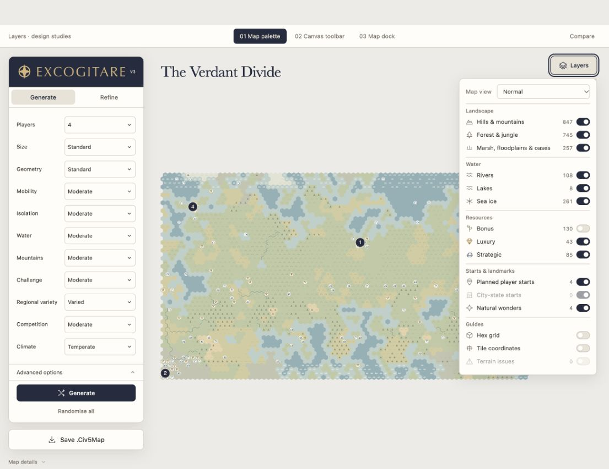
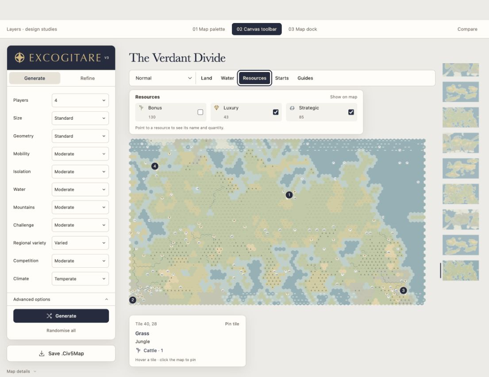
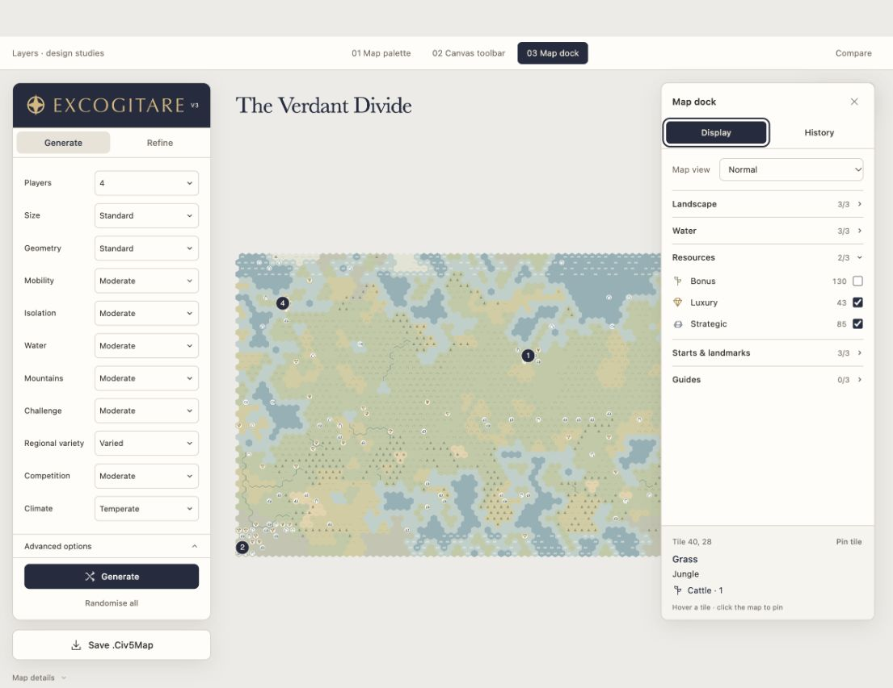

01Map palette
An attached toggle menu. Tile details appear on the canvas.

Try the refined menuAn attached toggle menu. Tile details appear on the canvas.

Try the refined menuMap views and layer groups sit beneath the map title.

Try the toolbarDisplay controls and history share one right-hand panel.

Try the dock